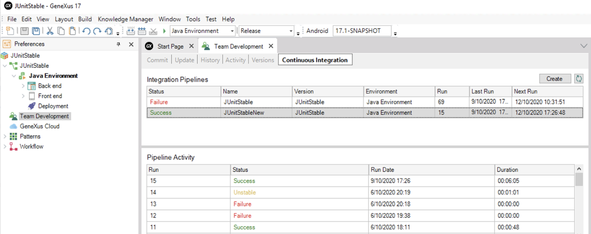

GeneXus Server 17 is the product for team development with GeneXus 17. Not just for SCM, it is the platform that holds and tracks your solutions' version and production lines, your continuous integration and delivery pipelines, it's the basis for your agile development process and Expanded DevOps with GeneXus 17. Here follows a list of the most important improvements and a link to all the details too. Track Continuous Integration from IDENow you can create and monitor continuous integration processes from the GeneXus IDE and the GeneXus Server console.  More information at CI integrated to GeneXus and GXserver, CI: Create Pipeline. Integrating Team collaboration softwareBuilding software takes a lot of effort, and different team members with different roles need to take action when some tasks advance or are done by others. GeneXus Server 17 can be extended, so that specific comments in commits to GeneXus Server reach Jira, Slack or any other. More information at Event Dispatcher extension. Robustness and SpeedThis version is the product of extraordinary efforts for robustness and speed. Merging has been improved and polished, performance has been improved in Updates and Commits. More DetailsPlease check out the following link to read detailed information about the several improvements in GeneXus Server 17 and also information about compatibility issues
See Also |
| Backlinks | ||
| Expanded DevOps with GeneXus 17 | Toc:GeneXus 17 | How to configure GeneXus Server for Continuous Integration |